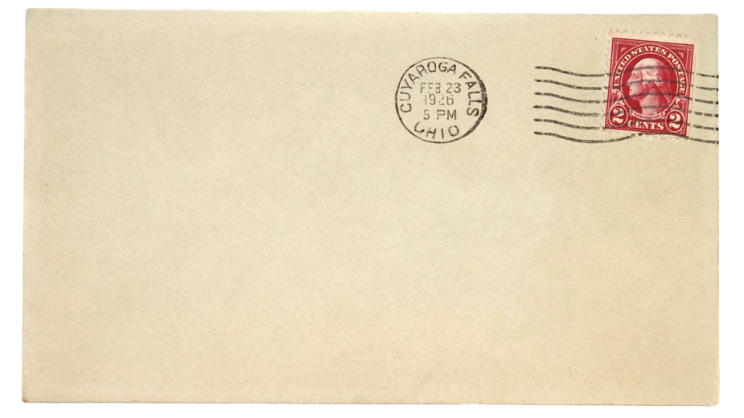
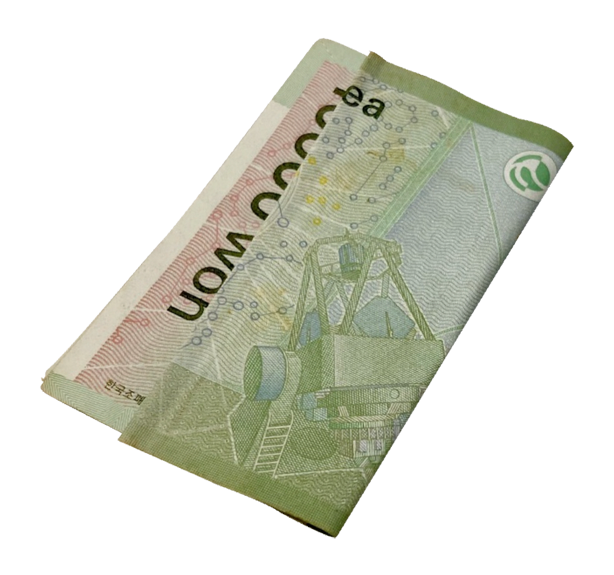

많은 준비를 거쳐나온 Glich Mode! 열심히 했으니 많이 기대해 주세요~! 2. A BEAT BOX 모든 일이 잘 풀릴 것이다! 나냥이. 더 즐겁고 행복한 추억을 우리 다 같이 만들어요~! 항상 사랑합니다.ROOM No.01106. ROOM No. 0323. ROOM No. 0205. 첫 번째 정규..! 첫 번째 리팩…! 여러분 마음에 닿았으면 좋겠어요..!Boom 으로 Oh! 너무 좋으니…one 하나가 돼요! moment 이 순간 행복해요. 이 카드의 소유자 당신은 행복 건강 할꺼야! 제가 이 카드에서 당신을 지켜줄게 걱정마요~~!! 저희 리팩 2집 드디어 또 나왔네요!! 진짜 4곡 다 너무너무 좋아서 많이 들어주세요~!^^ 버퍼링 어떤가요?? 되게 색다른 느낌이죠 ㅎ 다양한 시도를 해봐서 즐거운 컴백이 될 거 같아요!!! 이번 glich mode 앨범 중에 제가 가장 좋아하는 곡은 바로바로. 초등학생 때 만든 싸인>.< 이번 앨범 중에서 가장 최애곡이 무엇인가요! 전 고래가 제일 신나구 좋더라고요 ㅎㅎ. 역대급으로 춤이 쉽고 재미있는 이번 앨범 ㅎㅎ 이번 활동도 재미있게 할게요!! 쩗쭓짧(싸인을 바꿔야 할 때가….) 7드림으로 다시 시작한 NCT DRAEM!!! 여러분이 행복하면 저희도 행복해요~ 수록곡 중에 어떤 곡을 좋아하시나요!! 전 진짜로 다 좋아요ㅎㅎ 알려주세요~~◠‿◠ SUPER ONE SUPER M SPEND LOVE. 슈슈

Y야 생일축하해.
서로 작은 메모를 남겨 놓았던 걸 빼고 생각해 보면 너에게 편지를 쓰는 건 처음이다! 이번 연도는 우리 둘이서 만나는 날이 많았던 것 같지? 사실 난 우리가 이렇게 오래 연락할 줄 몰랐어. 아마 너도 그렇게 생각했을 거 같아. 고등학교 때를 생각해 봐도, 짝이 돼서 거리가 가까웠을 때 말고는 둘이 얘기한 적이 거의 없었으니까. 대학생이 된 후에는 고등학교 때 같이 놀던 친구들과 다 같이 만나는 일이 많아서 옆자리에 앉는 날이 아니면 서로 말할 일도 거의 없었던 것 같고. 우리가 어쩌다 이렇게 가까운 사이가 되었는지 기억은 나지 않지만 너랑 약속을 잡으면 항상 기대되고, 약속 당일까지 들떠있어. 초반에는 서로에 대해 모르는 게 많으니까 대화가 끊길 때도 있었는데. 그럴 때 어색하긴 했어도 같이 있는 것만으로 좋았고, 그건 지금도 똑같아. 한 번도 말한 적 없지만 너를 처음 봤을 때 너의 차분한 분위기나 말투가 좋아서 친해지고 싶었어. 더 가까워지고 싶은 마음이 있었지만 너는 평소에 속 얘기를 잘 하지 않고 깊은 얘기하는 것을 좋아하지 않는 것 같아서 일부로 캐묻지 않았는데, 요즘 들어 너에 관한 얘기나 나에게만 해주는 얘기들이 많아져서 좋아. 너한테 편지를 쓰는 건 처음이라 말이 횡설수설 글을썼는데...아무튼 생일 한 번 더 축하해! 앞으로도 나랑 계속 놀아줘!
From. Sy

나는 맥시멀리스트다. 그 기질은 방 뿐만이 아니라 공간이란 공간에는 모두 적용되어 지갑에도 너무나 많은 것들이 있다. 내가 13살이었을 때였나. 친구와 영화를 보러 가는 길에 지갑을 잃어버렸다. 영화는 취소하고 지갑을 찾아나섰지만 결국 찾지 못했다. 당시 전 재산이었던 3만원과 새로 산 지갑, 안에 넣어놓은 스티커나 영수증(사실 쓰레기들..)을 전부 잃어버리고 하루종일 허탈한 상태로 지냈다. 맥시멀리스트…..인 것 치곤 물건을 잘 잃어버리지 않는 편이라 그랬는지 그 사건으로 인해 꽤 큰 충격을 받았다. 그 이후로 지폐는 잃어버리기 쉬운 물체라는 생각이 깊게 박혀 체크카드를 만들었다. 처음에는 카드 사용이 익숙지 않아서 카드에서 지폐를 인출하여 사용하는 수고를 했고 이후 카드가 익숙해지면서 지갑도 카드지갑으로 바꾸게 되었다. 여전히 지폐를 들고 다니지 않고, 지갑에 지폐가 생겨도 바로 저금통에 보관하는 습관이 생겼지만 당시에 사용하던 지폐 종이의 질감이 그리울 때가 있다.